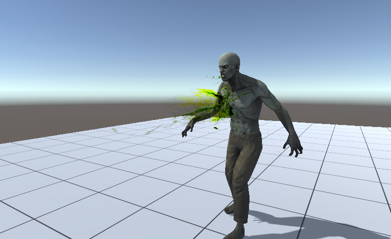

Volumectic Blood Effects: 1.0.0.0Volumectic Blood Effects (size: 37.31Mb) version: 1.0.0.0
Description
Price: $15.00.
Publisher: kripto289.
Description:Support Unity4 (Free and Pro) and Unity5 (Free and Pro).
Optimized for mobile.
Pack includes 57 blood prefabs (43 prefab of red blood and also 15 prefabs of colored blood).
WEB DEMO
You can easily adjust the scale (using prefab scale) and change the color.
Effect is created using 4-12 particles, so it is very fast, even for mobile.
The effects work on all platforms, with all settings (DX9, DX11, VertexLit/Deffered/Forward renderer, Gamma/Linear space).
if you have questions or suggestions, send them to my email Extra Images
